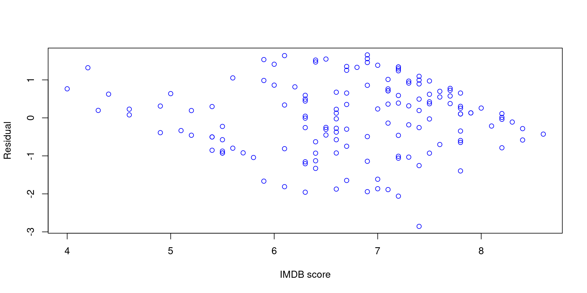
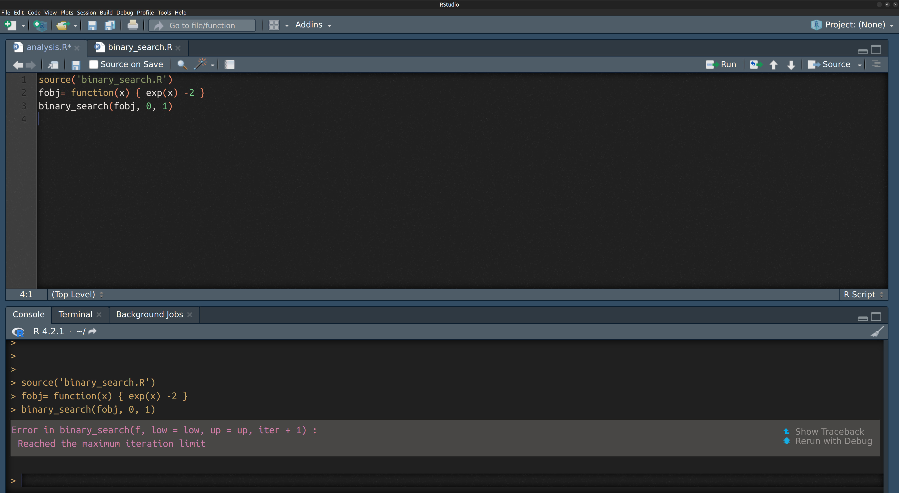
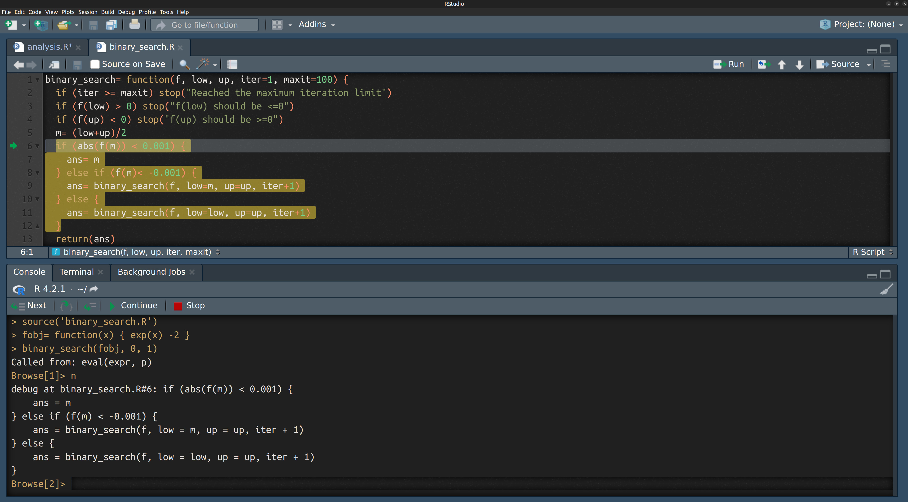

install.packages("tidyverse")
install.packages("fivethirtyeight")
install.packages("compiler")Modern Statistical Computing
4. Programming
David Rossell
Pompeu Fabra University
Reproducing these lecture notes
Required R packages
Once they’re installed, load them.
Functions and iteration
Hadley Wickam
When you copied and pasted a block of text more than twice, it’s time to use a function / iteration
Saves time
Avoids mistakes (copy/paste etc.)
Code is usually easier to read
Functions
Basics
describe_contvar= function(x) {
ans= c(mean(x), sd(x), quantile(x, probs=c(0.25,0.75)))
names(ans)= c('mean','sd','p25','p75')
return(round(ans,1))
}
describe_discvar= function(x) {
require(tidyverse) #if package not loaded, load it
n= table(x)
p= round(100 * n / sum(n), 1)
ans= tibble(value= names(n), count= n, percentage= p)
return(ans)
}
describe_var= function(x, vartype) {
if (vartype == 'continuous') {
ans= describe_contvar(x)
} else if (vartype == 'discrete') {
ans= describe_discvar(x)
} else {
stop("vartype must be 'continuous' or 'discrete'")
}
return(ans)
}Example
Describe movie ratings at Fandango
[1] "film" "year"
[3] "rottentomatoes" "rottentomatoes_user"
[5] "metacritic" "metacritic_user"
[7] "imdb" "fandango_stars"
[9] "fandango_ratingvalue" "rt_norm"
[11] "rt_user_norm" "metacritic_norm"
[13] "metacritic_user_nom" "imdb_norm"
[15] "rt_norm_round" "rt_user_norm_round"
[17] "metacritic_norm_round" "metacritic_user_norm_round"
[19] "imdb_norm_round" "metacritic_user_vote_count"
[21] "imdb_user_vote_count" "fandango_votes"
[23] "fandango_difference" # A tibble: 146 × 23
film year rottentomatoes rottentomatoes_user metacritic metacritic_user
<chr> <dbl> <int> <int> <int> <dbl>
1 Avengers… 2015 74 86 66 7.1
2 Cinderel… 2015 85 80 67 7.5
3 Ant-Man 2015 80 90 64 8.1
4 Do You B… 2015 18 84 22 4.7
5 Hot Tub … 2015 14 28 29 3.4
6 The Wate… 2015 63 62 50 6.8
7 Irration… 2015 42 53 53 7.6
8 Top Five 2014 86 64 81 6.8
9 Shaun th… 2015 99 82 81 8.8
10 Love & M… 2015 89 87 80 8.5
# ℹ 136 more rows
# ℹ 17 more variables: imdb <dbl>, fandango_stars <dbl>,
# fandango_ratingvalue <dbl>, rt_norm <dbl>, rt_user_norm <dbl>,
# metacritic_norm <dbl>, metacritic_user_nom <dbl>, imdb_norm <dbl>,
# rt_norm_round <dbl>, rt_user_norm_round <dbl>, metacritic_norm_round <dbl>,
# metacritic_user_norm_round <dbl>, imdb_norm_round <dbl>,
# metacritic_user_vote_count <int>, imdb_user_vote_count <int>, …Rotten Tomatoes film’s score (normalized to 0-5)
Number of stars in Fandango movie page
Function arguments
If you don’t specify an argument name, it’s taken by order
Arguments may have default values
The … argument
Allows passing parameters that are not explicitly defined
Debugging
debug(fun) sets function fun in debugging mode. When next called, it runs line-by-line interactively
Example. Find x such that function fobj(x)=0. We know that fobj is increasing
Binary search algorithm
The function below contains a mistake
#Find x s.t. f(x)=0. Assuming f(low)<0, f(up)>0, f increasing
binary_search= function(f, low, up, iter=1, maxit=100) {
if (iter == maxit) stop("Reached the maximum iteration limit")
if (f(low) > 0) stop("f(low) should be <=0")
if (f(up) < 0) stop("f(up) should be >=0")
m= (low+up)/2
if (abs(f(m)) < 0.001) {
ans= m
} else if (f(m)< -0.001) {
ans= binary_search(f, low=m, up=up, iter+1)
} else {
ans= binary_search(f, low=low, up=up, iter+1)
}
return(ans)
}When running it, it doesn’t find the solution
Debugging in RStudio
Place your function in a separate file (it’s good practice anyway)
Click on the left of a line to add watchpoint. A red mark appears

Source the file where you added the watchpoint. When calling the function again, it runs interactively
We found the issue
binary_search= function(f, low, up, iter=1, maxit=100) {
if (iter == maxit) stop("Reached the maximum iteration limit")
if (f(low) > 0) stop("f(low) should be <=0")
if (f(up) < 0) stop("f(up) should be >=0")
m= (low+up)/2
if (abs(f(m)) < 0.001) {
ans= m
} else if (f(m)< -0.001) {
ans= binary_search(f, low=m, up=up, iter+1)
} else {
ans= binary_search(f, low=low, up=up, iter+1)
}
return(ans)
}We found the issue
binary_search= function(f, low, up, iter=1, maxit=100) {
if (iter == maxit) stop("Reached the maximum iteration limit")
if (f(low) > 0) stop("f(low) should be <=0")
if (f(up) < 0) stop("f(up) should be >=0")
m= (low+up)/2
if (abs(f(m)) < 0.001) {
ans= m
} else if (f(m)< -0.001) {
ans= binary_search(f, low=m, up=up, iter+1)
} else {
ans= binary_search(f, low=low, up=m, iter+1)
}
return(ans)
}
Loops
Basics. for and while
Function to produce descriptive analysis for all variables in a dataset
Use
describe_discvarfor factorsUse
describe_contvarfor numericOtherwise, skip the variable
describe_dataset= function(data) {
ans= vector("list", length=ncol(data)) #create empty list with ncol(data) elements
names(ans)= names(data)
for (i in 1:ncol(data)) {
#if data is a list, data.frame or tibble,
##data[[i]] selects its i^th element / variable
if (is.factor(data[[i]])) {
ans[[i]]= describe_discvar(data[[i]])
} else if (is.numeric(data[[i]])) {
ans[[i]]= describe_contvar(data[[i]])
}
}
return(ans)
}Convert year into factor, and select normalized film scores
$year
# A tibble: 2 × 3
value count percentage
<chr> <table[1d]> <table[1d]>
1 2014 17 11.6
2 2015 129 88.4
$rt_norm
mean sd p25 p75
3.0 1.5 1.6 4.4
$rt_user_norm
mean sd p25 p75
3.2 1.0 2.5 4.0
$metacritic_norm
mean sd p25 p75
2.9 1.0 2.2 3.8
$imdb_norm
mean sd p25 p75
3.4 0.5 3.1 3.7 Functions can also be arguments
Speeding up loops
Loops are slow in R (things like [ are functions, and cost time to evaluate)
Operate with vectors when possible
If available, use R’s purpose-built functions
Compile functions with
cmpfun
Example. Sum of two vectors
Example. Sum of each variable in a matrix
n= 100; p=10000
x= matrix(rnorm(n*p), nrow=n, ncol=p) #n x p matrix with entries ~ N(0,1)
mysum= double(p)
system.time(for (i in 1:p) { mysum[i]= sum(x[,i]) }) user system elapsed
0.009 0.000 0.009 mycolSums= function(x) {
p= ncol(x); ans= double(p)
for (i in 1:p) { ans[i]= sum(x[,i]) }
return(ans)
}
library(compiler)
mycolSums_cmp= cmpfun(mycolSums)
system.time(mysum <- mycolSums_cmp(x)) user system elapsed
0.007 0.000 0.007 user system elapsed
0.001 0.000 0.001 Iteration
map_something
Package purrr has functions for looping over variables and returning a value
map(): returns a listmap_dbl(),map_int(): returns a double/integer vectormap_lgl(),map_chr(): returns a logical/character vectormap_df(): formats results into a data frame
$rt_norm
[1] 3.042466
$rt_user_norm
[1] 3.193836
$metacritic_norm
[1] 2.940411
$imdb_norm
[1] 3.368493$rt_norm
mean sd p25 p75
3.0 1.5 1.6 4.4
$rt_user_norm
mean sd p25 p75
3.2 1.0 2.5 4.0
$metacritic_norm
mean sd p25 p75
2.9 1.0 2.2 3.8
$imdb_norm
mean sd p25 p75
3.4 0.5 3.1 3.7 Use map_df to get output formatted as a tibble
fandango_sum= map_df(fandango_norm[,-1], describe_contvar) |>
mutate(varname= names(fandango_norm)[-1])
fandango_sum= relocate(fandango_sum, varname) #put varname as 1st column
fandango_sum# A tibble: 4 × 5
varname mean sd p25 p75
<chr> <dbl> <dbl> <dbl> <dbl>
1 rt_norm 3 1.5 1.6 4.4
2 rt_user_norm 3.2 1 2.5 4
3 metacritic_norm 2.9 1 2.2 3.8
4 imdb_norm 3.4 0.5 3.1 3.7Exercises
Exercise 1
Create a function all_numeric that returns TRUE if all columns in a dataset x are numeric (i.e. return true to is.numeric, and FALSE otherwise)
Test the function by running
Exercise 2
Create a function vartype that returns the variable types for all columns in x. Specifically, a list with 3 entries named numeric, factor and character.
The 1st entry is a logical vector of length
ncol(x)indicating what columns inxare numeric (is.numeric)Analogously for the 2nd entry with
is.factor, the 3rd withis.character
Hint: fill in … with your code in the function below
Exercise 3 (advanced)
Function summarizeContVars returns (mean, sd, Q1, Q3) for all variables (i.e. it puts what we did a few slides ago into a function). It uses all_numeric from Exercise 1, and describe_contvar defined earlier
Exercise 3 (advanced)
Create a function summarizeContVars_bygroups(x, groups)
x: dataset with numeric columnsgroups: character indicating the name of a column inx
Output: a list, where each entry is the result of applying summarizeContVars to each group
Hints:
Use
x[[groups]]to select the variableUse
groupids= unique(x[[groups]])to find the unique entries inx[,groups]Use a
foorloop over groups. For each group, select the subset of rows inxand usesummarizeContVars
summarizeContVars_bygroups= function(x, groups) {
if (missing(groups)) stop("groups cannot be missing")
othervars= (names(x) != groups) #vars other than the one defining the groups
if (!all_numeric(x[,othervars])) stop("All columns other than 'groups' must be numeric")
groupids= unique(x[[groups]])
...
}